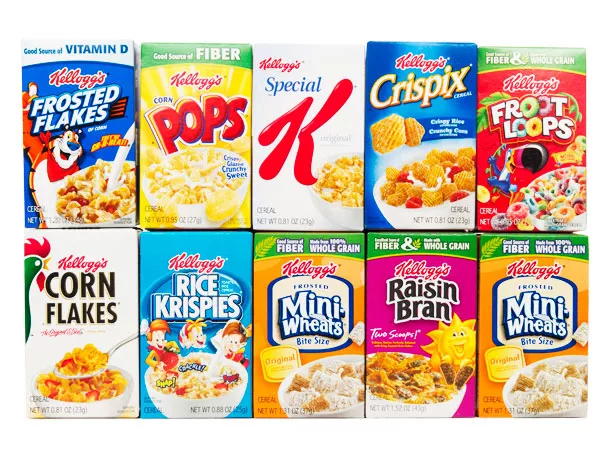

Cereal

Cereal will save the world
Cereal is great. You can have it with milk or you can have it dry. I've also heard that sometimes people will have it hot? I don't know I'm a simple man so I just have mine with water.
Kellogs is my favorite brand. It was created to keep boys from masturbating, but I don't think that worked. I mean just look at that hottie Tony the Tiger. Who can resist?
Ingredients
- Your favorite cereal
- Milk/Water/Heat/Dryness, whatever your preference is
Steps
- Please read all directions thoroughly before continuing
- Add the cereal to the bowl first. Seriously, if you don't do this step first there is no hope for the future.
- Once the cereal has been added to the bowl, then you can add whatever else you want, but only once the cereal has already been added to the bowl. Please make sure you do these steps in order, this is important.
- Now you can make it hot I think? I don't know if you want hot cereal you should probably find a different recipe.
- Enjoy and don't forget to like, comment, subscribe!
Home